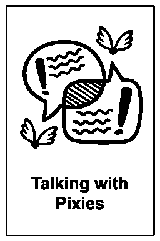

Talking with Pixies
In breve - Portare alla luce le voci interiori contrastanti che influenzano il nostro percorso verso gli obiettivi, permettendo di riconoscere sia le resistenze che le spinte al cambiamento.
- Durata
- 20 minuti
- Difficoltà
- Intermedia
- Gruppo
- gruppi di 3 persone
- Fase
- Ideare
Domanda da portare
- "Se non intraprendo questo cambiamento ora, quali opportunità potrei rimpiangere tra 5 anni?"
- "Quali risorse inaspettate potrei scoprire in me stesso affrontando questa sfida?"
- "Come cambierebbe la mia prospettiva professionale se superassi questa resistenza?"
Cosa ti serve
- Ambiente tranquillo e riservato che permetta conversazioni intime.
- Sedie disposte in modo che i gruppi di tre possano lavorare senza disturbarsi.
- Spazio sufficiente per permettere ai folletti di muoversi da un lato all'altro dell'ascoltatore.
- Timer o cronometro per gestire i tempi delle diverse fasi.
- Cartellini colorati per distinguere i ruoli (opzionale).
I passaggi
i partecipanti ad identificare un obiettivo significativo ma difficile.
5 minFormare gruppi di tre, assegnando i ruoli: un Ascoltatore e due Folletti.
Spiegare la struttura con un esempio personale.
Condivisione dell'obiettivo: l'Ascoltatore condivide il proprio obiettivo.
2 mini Folletti possono fare domande di chiarimento.
3 minil Folletto protettore si posiziona alla destra dell'Ascoltatore, il Folletto innovatore alla sinistra.
5 min